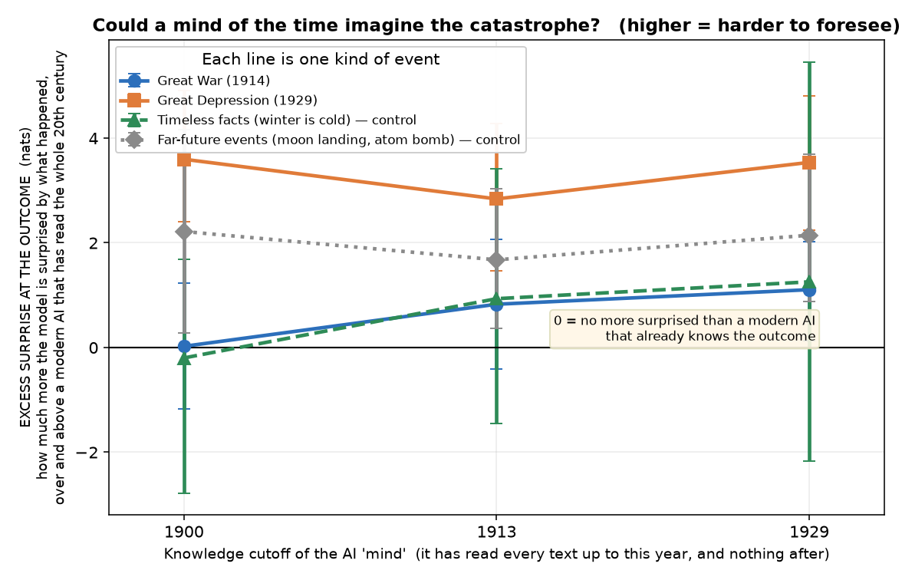
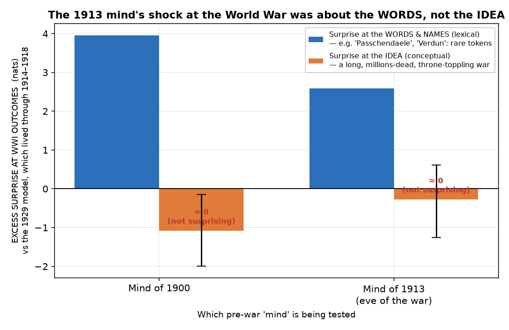
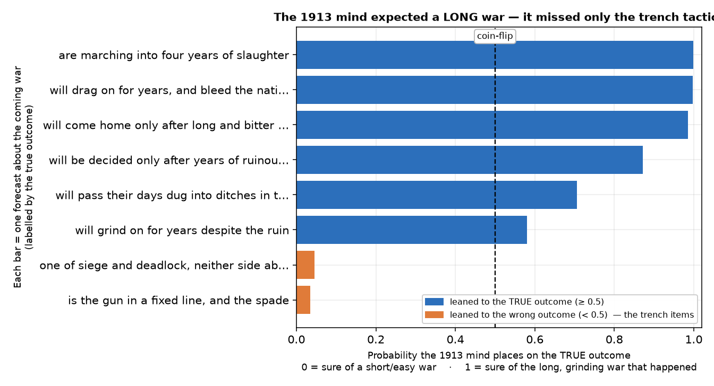
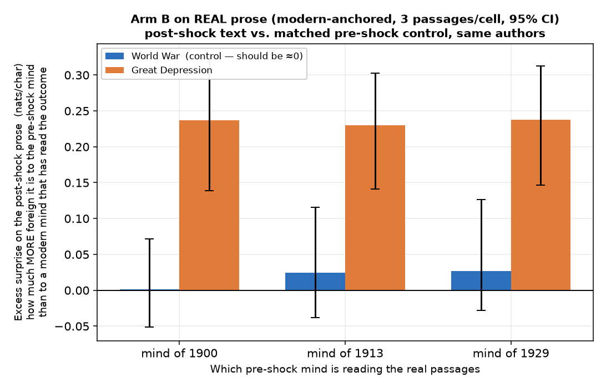
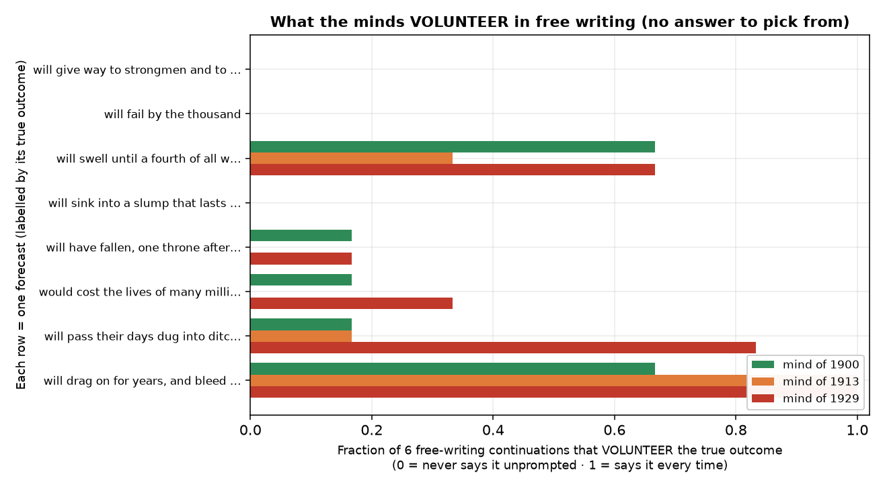

Measuring how foreseeable the two great catastrophes of the early 20th century—the First World War (1914) and the Great Depression (1929)—really were, using AI ‘minds’ frozen in the past.
We trained AI language models on text written only up to a certain year and nothing after. A model trained on everything up to 1913 is like a very well-read person at the end of 1913: it knows the whole world up to then, but has no idea what 1914 will bring. We then ask each frozen mind how surprised it is by what actually happened next. Surprise you can’t fake—a mind that couldn’t imagine the outcome is genuinely startled by it. That surprise is a direct, hindsight-free measure of how foreseeable the catastrophe was.
Once we strip away mere vocabulary, the two disasters are not the same kind of event:
The difference is precise and statistically clear: measured on the 1929 mind, the Depression carried 2.432 nats more excess conceptual surprise than the World War (95% confidence interval [0.804, 4.076], p = 0.0026). A p-value this small means the gap is very unlikely to be a fluke of the particular sentences we chose.

What you see: the orange Depression line sits high and stays high—every pre-1930 mind, even the one on the eve of the crash (1929), is deeply surprised, more so than by the grey far-future control events (moon landing, atom bomb). The blue World War line sits low, down among the green timeless-fact controls (‘winter is cold’).
Take-away: the Depression’s severity was far less imaginable in advance than the World War’s.
Note: the absolute heights differ slightly between AI families; only comparisons between lines at the same cutoff are meaningful, which is exactly what the headline uses.
At first glance the 1913 mind is badly surprised by the war (its raw excess surprise is [2.302, 1.32, 3.412] nats). But almost all of that is surprise at unfamiliar vocabulary—place-names and coinages the 1929 model picked up from 1914–1918 writing. Surprise at the idea itself is essentially nil.

What you see: the blue (vocabulary) bar is large; the orange (idea) bar is indistinguishable from zero.
Take-away: strip away the unfamiliar words and the character of the Great War was not a surprising idea to a well-read mind of 1913.
If the long war had been unthinkable, the 1913 mind would have confidently predicted the short-war consensus. It does the opposite. On the war’s length it leans firmly to the true, grinding, years-long war—asked outright how long a war will last it writes ‘for years’ every time. What it genuinely fails to foresee is narrower and more specific: the trench-deadlock tactics (static lines, the machine-gun in a fixed position)—the only forecasts it gets confidently wrong (2 of 8). The famous short-war optimism of 1914 lived in newspapers and cheering crowds—not in the written record the model learned from, which already contained Bloch’s 1899 prediction of attrition.

What you see: the top six bars (about the war’s length and cost) sit far to the right—the mind expects the long war. Only the bottom two (about trench deadlock) sit at the left.
Take-away: the 1913 mind expected a long, costly war—it did not believe ‘home by Christmas’; what it missed was the specific trench-warfare form.
The Depression is the opposite story. Its excess conceptual surprise is large at every cutoff—3.595 nats at 1900, 2.837 at 1913, 3.535 at 1929—and it does not fall as the crash approaches. Even the 1929 mind, standing on the edge of the cliff, finds the coming decade of 25%-unemployment, thousands of bank failures and a lost ten years more surprising than the far-future control events (the moon landing, the atomic bomb). Asked what the years after the crash hold, the models predict the comfortable consensus—continued prosperity, a quick rebound—not the catastrophe.
A low-surprise reading only means ‘foresight’ if the old mind isn’t secretly peeking at the answer. We test each mind on plain facts about the event it shouldn’t know. If it scores at chance, it isn’t peeking.
| Event | Mind tested | Score on ‘forbidden’ facts (25% = pure guessing) | Verdict | What it means |
|---|---|---|---|---|
| Great Depression | 1929 | 2/8 = 25.0% (p=0.6329) | CLEAN | At chance—not peeking. It doesn’t even reliably know the Oct 1929 crash itself. So its high surprise is real. |
| First World War | 1913 | 9/12 = 75.0% | flagged | Looks high—but only because WWI place-names (Gallipoli, Passchendaele, the liner Lusitania) were already famous before 1914. It fails on genuinely new things (the ‘tank’, the 1917 US entry). This is exactly the vocabulary surprise we already stripped out. |
The asymmetry is itself telling: the war was ‘known’ only as a set of familiar words; the Depression was not known at all.
The results above use carefully-built sentences. As a reality check we repeat the measurement on genuine public-domain prose from the period.

What you see: the post-WWI text (solid blue) is barely more surprising to the pre-war minds than its pre-war control; the post-crash text (solid orange) is markedly more surprising to every mind than its pre-crash control.
Take-away: real prose agrees with the constructed probes—the language of the Depression was foreign to every pre-1930 mind.
There are two ways to read a mind: ask it to pick the more plausible of two endings (recognition), or let it freely continue a sentence and see what it volunteers (production). Volunteering is the harder test. If anything, the minds volunteer the true catastrophe less than they recognise it—so any ‘foresight’ we report is an upper bound, never inflated.
| Mind | Recognises the true outcome (picks it in a forced choice) | Volunteers it unprompted (free writing) |
|---|---|---|
| 1900 | 62% | 0.23 |
| 1913 | 75% | 0.19 |
| 1929 | 50% | 0.38 |
But that ‘0.19’ is a skewed average that hides the real pattern. Broken out item by item:

What you see: one row—how long the war lasts—is at 1.0 (the mind volunteers ‘for years’ every time); most other rows are at 0.
Take-away: the minds spontaneously predict exactly one true thing—the war will last years—and mostly ramble on the rest. The single clean signal is enough to bury ‘home by Christmas’.
Honesty note: on the items scored 0, the base model usually wanders off-topic rather than predicting the rosy outcome, so a 0 mixes ‘got it wrong’ with ‘said something irrelevant’. Production is therefore a crude floor, not a clean score—which is why we treat teacher-forcing (recognition) as the main read and production only as a check that it isn’t inflating the signal.
The findings above use the English item bank. Do they hold when the same models are prompted in German and French — and does a third catastrophe, the fall of the old imperial order (the emperors deposed, the empires broken up), behave like the war or like the Depression? We built matched outcome statements for all three events in all three languages (8 per event) and read off the same conceptual surprise.
At the 1913 mind, excess surprise at the war's outcomes is -1.1/-0.5/-0.2 (EN/DE/FR) and at the empire-collapse -0.8/+0.4/-0.0 — both near zero; the Depression, read by the 1929 mind, stays at +2.2/+2.0/+2.7. Every prompt and score is in reports/crosslingual_events.html.
Stefan Zweig's memoir The World of Yesterday catalogues the illusions of the pre-1914 mind. We turn the four he dwells on — faith in progress, the unthinkability of war, the confinement of women, and the veneration of age over youth — into calibrated belief-vs-skeptic choices, in all three languages.

Freeze a mind before the shock, compare its surprise to a mind that has read the sequel, and separate the words from the ideas. By that measure, 1914 and 1929 were different kinds of disaster. The Great War was loud in unfamiliar names but its character was imaginable in advance—the ‘home by Christmas’ illusion was a public mood, not a failure of imagination. The Great Depression was the true tail event: on the eve of the crash, its depth was less conceivable than a man walking on the moon. Models that treat all rare disasters as equally unforecastable are, for these two, mispricing the difference.
Every number here is computed from the model runs (files in this folder); nothing is hand-entered. Full method, confidence intervals and limitations are in the accompanying paper (paper/foresight.pdf).